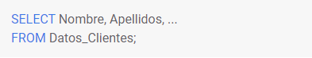
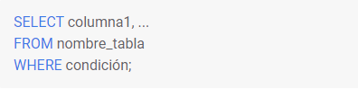
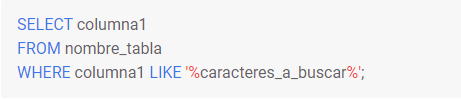
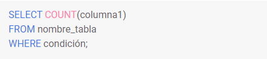
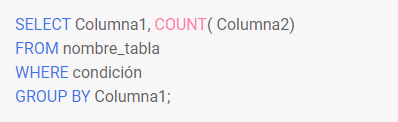
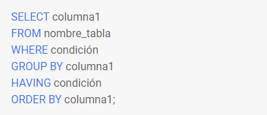
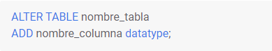
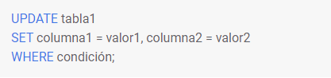
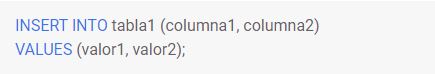

Para extraer los datos o consultarlos, transformarlos o convertirlos, mostramos un resumen del curso SQL con los comandos más importantes:
SELECT: La instrucción SELECT se utiliza para seleccionar distintos datos de contiene una base de datos, A continuación mostramos un ejemplo:

SELECT DISTINCT: Para seleccionar los distintos valores de una tabla se añade la instrucción:
WHERE: La instrucción WHERE es utilizada para establecer condiciones y filtros a la query.

AND, OR, NOT: Los operadores AND, OR y NOT se utilizan en la cláusula WHERE, dependiendo del tipo de condición que se quiera establecer.
IN: Este comando permite concretar valores múltiples en dentro de la cláusula WHERE.
BETWEEN: Este comando de SQL selecciona valores dentro de un rango que se especifica en la cláusula WHERE. Los valores pueden ser fechas, números o texto.

LIKE: El comando LIKE es utilizado en la cláusula WHERE para buscar un valor que contenga los caracteres que se especifiquen en una columna concreta.

ORDER BY: Este comando sirve para ordenar los resultados de una consulta en orden ascendente o descendente.
COUNT, AVG, SUM: Estas son las funciones de agregación principales ya que permiten contar, sumar o calcular promedios de una columna concreta.

GROUP BY: Cuando se utilizan funciones de agregación, se utiliza GROUP BY para agrupar el resultado de la query en una o varias columnas.

HAVING: El comando HAVING es utilizado con funciones agregadas en la cláusula WHERE.

CREATE TABLE: Se utiliza para crear una tabla nueva en una base de datos SQL.
DROP TABLE: Esta instrucción de SQL es utilizada para borrar una tabla de la base de datos.
ALTER TABLE: Este comando sirve para modificar, eliminar o añadir columnas en una tabla que ya existe en la base de datos.

UPDATE: Este comando es utilizado para actualizar los valores de una tabla SQL que se quiera modificar.

DELETE: El comando DELETE es utilizado para eliminar valores concretos de una tabla SQL.
INSERT INTO: Este comando SQL sirve para insertar valores en una tabla que ya existe.
